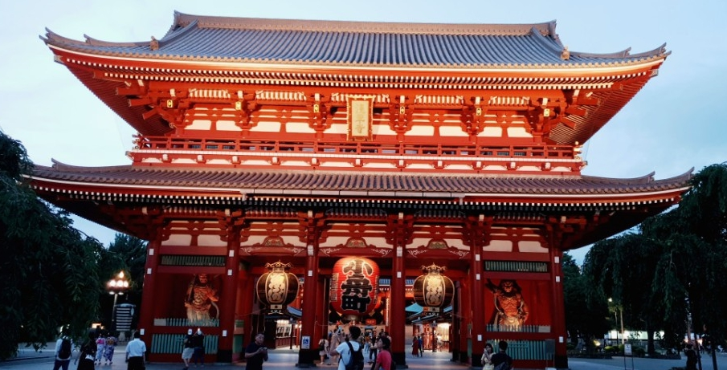
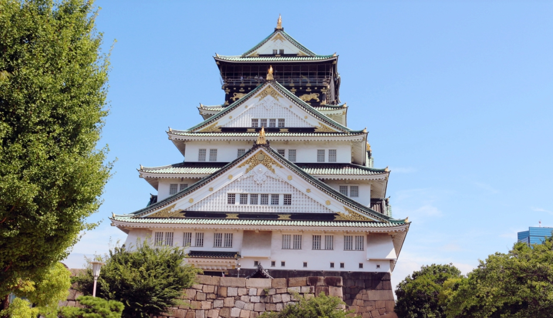

일본
문화와 현대가 공존하는 체험학습의 섬나라!
일정표 예시 안내
동경과 오사카로 떠나는 특별한 여행
동경
동경은 아샛사 관음사, 요코하마, 하코네 등 전통과 자연이 어우러진 도시입니다.
현대적인 신주쿠와 전통적인 메이지진구가 조화를 이루며, 다양한 체험을 제공합니다.
학생들에게 일본의 역사와 문화를 깊이 이해할 기회를 선사합니다.
오사카
오사카는 오사카성, 도톤보리, 유니버셜스튜디오 등 활기찬 도시 문화가 특징입니다.
교토의 아라시야마 대나무숲과 청수사로 전통적인 아름다움을 경험할 수 있습니다.
나라의 동대사와 함께 역사와 레저를 동시에 즐길 수 있는 매력적인 지역입니다.
동경 프로그램 예시
호텔: APA 호텔 앤 리조트 도쿄베이 마쿠하리 등
| 시간 | 1일차 | 2일차 | 3일차 | 4일차 |
|---|---|---|---|---|
| 오전 | 인천공항 출발, 나리타공항 도착 | - | 하코네아시호수 유람선 | 신주쿠 신도청 타워 전망대 견학 |
| 오후 | 동경 아샛사 관음사, 나카미세거리 | 요코하마컵라면박물관, 아카렌가&차이나타운, 메이지진구, 하라주쿠 다케시다 도오리 견학 | 오와쿠타니 계곡, 후지산오합목 견학 | 간사이공항 출발, 인천공항 도착 |

오사카 프로그램 예시
호텔: 센타라 그랜드호텔 등
| 시간 | 1일차 | 2일차 | 3일차 | 4일차 |
|---|---|---|---|---|
| 오전 | 인천공항 출발, 간사이공항 도착 | 유니버셜스튜디오 | 아라시야마 차쿠린대나무숲, 노노미야진자, 도케츠교 견학 | 나라 동대사 |
| 오후 | 오사카성, 도톤보리 | 유니버셜스튜디오 | 교토의 동지사 대학 윤동주, 정지용 시비, 청수사 | 간사이공항 출발, 인천공항 도착 |

일본에서 특별한 체험학습을 시작하세요!